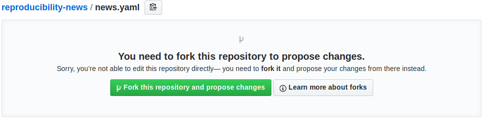
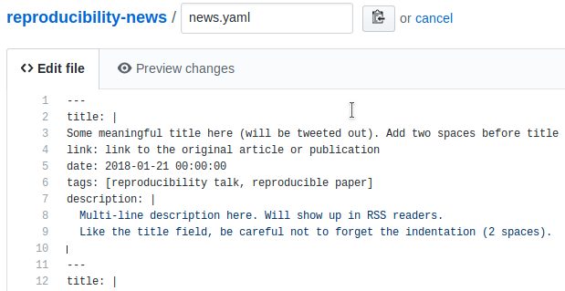
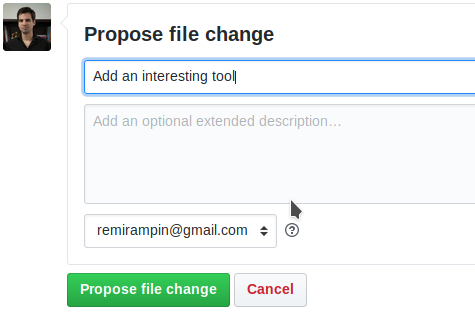
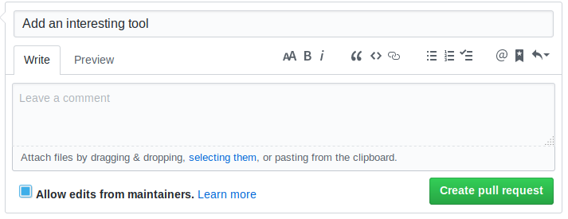

How to Contribute
The directory on this website is built from an RSS feed made entirely using GitHub and Travis CI (repo). Contributions to the reproducibility-news feed will be tweeted out via the @ReproFeed twitter bot and added to the directory on this site. So, the best way to contribute is to add content to the reproducibility-news RSS feed!
Best Practices for Contributing
- Make sure that the resource you are suggesting isn't already in the feed.
- Make sure the resource you are suggesting is open access. This means that anyone should be able to access, read, and/or download it without having to pay money or login.
- Be sure to add at least one tag to the resource. You can find a list of tags in the README file of the reproducibility-news GitHub repository.
Workflow
If you'd like to contribute, then you need to edit the news.yaml file in the reproducibility-news GitHub repository. Use this link to go to directly edit the file: https://github.com/ViDA-NYU/reproducibility-news/edit/master/news.yaml. If you click that, GitHub will ask you to fork the repository to make changes to the file like so:

Afterward, you'll be redirected to directly edit the file (in a repository in your account). Edit the news.yaml file by adding this template at the top of the file:
---
title: |
Some meaningful title here (will be tweeted out) - make sure there are two spaces to indent this line!
link: link to the original article or publication
date: 2018-01-21 00:00:00
tags: [reproducibility talk, reproducible paper]
description: |
Multi-line description here. Will show up in RSS readers.
Like the title field, be careful not to forget the indentation (2 spaces).

You should at least change the title, date (when the resource was created), tags (you must have one, but can have many separated by a comma in the square brackets), and a brief description. The description can be multi-line or one line.
Please make sure you that you have two lines between the description of the current entry and the title of the next entry. After you are finished, at the bottom of the web page you should see a space to add a descriptive message about your changes, and a button that says 'Propose file change'. After you write your concise, descriptive message about your changes, click that button!

This will initiate a pull request -- meaning, you'll be asking us to integrate your resource into the canonical feed. All you need to do is click the 'Create pull request' button:

And you'll be asked to add a bit more description and rename the title of the pull request (all optional but recommended). Please make sure you check 'Allow edits from maintainers' before you submit your pull request.

We will do our best to get to your pull request in as timely a manner as possible. And a preemptive thank you for helping us grow this community resource!